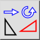
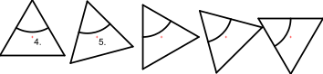

Taşı ve Döndür
Araç Çubuğu / Simge:


Menü: Değiştirmek > Taşı ve Döndür
Kısayol: M, R
Komutlar: moverotate | mr
Açıklama
Varlıkları taşır veya kopyalar ve aynı anda döndürür.
Kullanım
- Taşımak veya kopyalamak istediğiniz varlıkları seçin.
- Bu aracı başlatın.
- Seçenekler araç çubuğuna dönme açısını girin.
- Fareyle referans noktasını ayarlayın veya komut satırına bir koordinat girin.
- Hedef noktayı ayarlayın. Aşağıdaki şekilde, iki referans nokta etiketlenmiştir. Örnekteki dönme açısı 15 derece ve kopya sayısı dörttür. Bu, toplam 60 derece dönme açısıyla sonuçlanır.
- Taşıma ve döndürme iletişim kutusu görüntülenir. Varlıkları taşımak için „Delete Original"ı seçin, onları kopyalamak için „Keep Original"ı seçin. „Multiple Copies"i seçerek ve aşağıdaki metin satırına kopya sayısını girerek bir kerede belirli bir sayıda kopya da oluşturabilirsiniz. Yeni varlıklar orijinallerle aynı katmana yerleştirilir ve aynı özniteliklere sahiptir. Bunun yerine geçerli katmanı ve geçerli öznitelikleri kullanmak için „Use current layer and attributes"ı işaretleyin.
- Varlıkları taşımak ve döndürmek için „OK"a tıklayın.
